Zennの「Test」のフィード
フィード
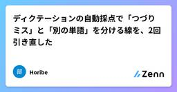
ディクテーションの自動採点で「つづりミス」と「別の単語」を分ける線を、2回引き直した
Zennの「Test」のフィード
TOEICの学習アプリを作っている。ディクテーション（聞こえた英文を打ち込む）の画面が、ずっとこうなっていた。単語ごとに自己判断してください。1. He's [◯ 聞き取れた] [✕ 聞き取れなかった]2. placing [◯ 聞き取れた] [✕ 聞き取れなかった]3. a [◯ 聞き取れた] [✕ 聞き取れなかった]4. paper [◯ 聞き取れた] [✕ 聞き取れなかった]...8語の文なら、8行×2ボタン。 毎回これを押す。ある日気づいた。正解の英文も、打ち込んだ文字列も、画面にある。突き合わせれば機械が判定で...
2時間前
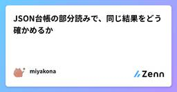
JSON台帳の部分読みで、同じ結果をどう確かめるか
Zennの「Test」のフィード
再試行で通った監視を、そのままにできなかった定期処理の結果が共有先へ反映されたかを、AWS Lambdaで監視していました。監視は、過去の結果を蓄積するJSONファイルを毎回丸ごと読み、今回の処理に関係するレコードを照合します。この記事では、そのJSONを「台帳」、1回の定期処理を「run」と呼びます。あるとき、監視がタイムアウトしてアラームが鳴りました。時間切れになると、その実行では検査を完了できません。再試行は正常に終わり、データへの影響はありませんでしたが、ログを振り返るとメモリ使用量が割り当ての上限へ近づき続けていました。まずメモリを増やして止血しました。その後、監視が...
7時間前
OCRの同値分割と境界値、実際のテストコードで見る
Zennの「Test」のフィード
対象はOCRエンジンそのものではありません。エンジンが返した結果を受け取ったあとの、ルールで書かれた部分です。アップロードサイズの上限、信頼度による振り分け、識別番号(IMEI)の妥当性チェックの3つを扱います。認識精度のほうは、出力が毎回少しずつ揺れるので、サンプル画像セットと閾値付きの比較で見ています(その方法は前に書きました)。後処理は入力が決まれば出力も決まるので、古典的な技法がそのまま効きます。そして、実際に不具合が出やすいのもこちらでした。コードはこの記事のために新しく書いたもので、実際の案件のコードではありません。上限の10MiBや信頼度0.90も記事用の値です。テスト...
11時間前
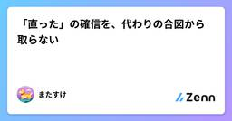
「直った」の確信を、代わりの合図から取らない
Zennの「Test」のフィード
ある週、同じ形の失敗を何度か踏んだ。どれも「直したはず」「できているはず」と思い込んでいて、実際には別のものを見て安心していた、という失敗だった。あとから並べてみると、確信を「本物の状態」ではなく「その手前の合図」から取っていた点で共通していた。 CI が緑でも、中身は入れ替わっていなかったデプロイのジョブは緑だった。ところが中のステップは「組み立ては別の場所でやる」という理由で SKIPPED を出して、そのまま正常終了していた。緑はジョブが落ちなかったことしか保証しない。本番に入っているコミットと、配備の状態ファイルを読んで、ようやく「何も入れ替わっていない」と分かった。それ...
1日前
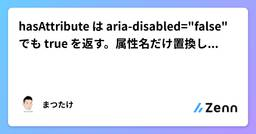
hasAttribute は aria-disabled="false" でも true を返す。属性名だけ置換したらテストが空洞になった
Zennの「Test」のフィード
!2作目のポートフォリオとして「Hubpin」（分散した発信を1か所に集めるハブサイト）を作りながら書いています。リポジトリ: https://github.com/Matsutake29/hubpinNext.js（App Router） + Supabase + Tailwind CSS並び替えボタンで、フォーカスが消える不具合がありました。キーボードで切り分けると、消えるのは「移動先が1番目のとき」だけで、原因は disabled={index === 0} でした。disabled な要素は、フォーカスを保持できません。そこで disabled を aria-...
1日前

AIエージェントのテスト設計 ― 実行結果と判断過程をどう評価するか
Zennの「Test」のフィード
従来のWebアプリケーションでは、入力に対して期待する処理結果を定義し、テストで検証する。AIエージェントでも基本は変わらない。ただし、LLMがToolの選択や実行順序を判断する場合、同じ依頼でも異なる手順で処理される可能性がある。そのため、正しい業務結果が得られたかだけでなく、そこに至る操作が適切だったかも評価する必要がある。本記事では、社内の経費精算システムを例に、AIエージェントの機能テストを考える。特に、結合テスト・システムテストでLLMの振る舞いをどう評価し、合格基準を設計するかに焦点を当てる。性能・負荷・障害耐性などの非機能テストは対象外とする。 1. 従来のWe...
1日前
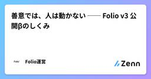
善意では、人は動かない ── Folio v3 公開βのしくみ
Zennの「Test」のフィード
この記事は、Folio を運営する株式会社AKIMA が書いています。2026年11月6日に、Folio v3 の公開βを始めました。「テストしてください」X で何度つぶやいても、誰も触ってくれない。善意では、人は動かない。だから Folio は、報酬を払って、契約で動かすことにしました。作っただけで、終わらせない。 Folio v3 とはアプリは作れた。でも、触ったのは自分と AI だけ。この状態で公開すると、初めて使う人がどこで止まるかを知らないまま出すことになります。出した後に、最初に使ってくれる人へどう届けるかも、作った人が一人で抱えがちです。Folio v3...
2日前
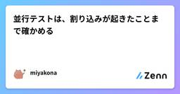
並行テストは、割り込みが起きたことまで確かめる
Zennの「Test」のフィード
全通り試しても、直列にしか動いていなかった共有ファイルをBotと再生成用のLambdaが更新する処理で、追記が消えないことを確かめたかった。読む処理と書く処理の間へ別の更新を差し込むテストは、すでにありました。ただ、AIエージェントが並行処理のセルフレビューをするたびに、割り込みを再現するスクリプトを作り直していました。そこで、操作の直前で書き手を止め、どちらを1手進めるかを全通り試す部品へ移しました。ところが、部品自身のレビューで、最初の操作だけを止める設定でもテストが通ることが分かりました。2本が同時に待っていても、片方が読み書きを全部終えてから、もう片方が動いていたのです。...
2日前
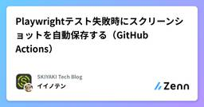
Playwrightテスト失敗時にスクリーンショットを自動保存する（GitHub Actions） 1
1
Zennの「Test」のフィード
GitHub ActionsでPlaywrightのE2Eテストを実行している場合、テスト失敗時に失敗タイミングのスクリーンショットを残しておくと原因調査が楽になると思い、設定してみました。特に面倒な事とかはしてないのでメモ的に....。 設定方法playwright.config.tsexport default defineConfig({ use: { screenshot: 'only-on-failure', },});workflow.yml- name: Run Playwright tests run: npx playwright...
2日前
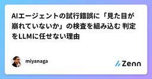
AIエージェントの試行錯誤に「見た目が崩れていないか」の検査を組み込む 判定をLLMに任せない理由
Zennの「Test」のフィード
弊社（アイデアマンズ）はページスピード改善の仕事で、主にフロントエンドの改善を提案しています。速くするためにHTMLやCSS、JavaScriptへ手を入れますが、見た目が変わってしまっては困ります。速くなっても表示が崩れるのでは意味がありません。以前はこの確認を目視でしていました。ところが改善の試行錯誤をAIエージェントへ任せるようになり、人間の目視では追いつかなくなりました。この記事では、AIの試行錯誤のループに「見た目が変わっていないか」の検査を組み込んだときの設計判断を整理します。検査の判定をLLMに任せなかった理由と、機械的な比較を実用にするための2つの工夫が中心です。...
3日前
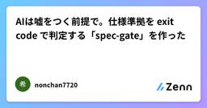
AIは嘘をつく前提で。仕様準拠を exit code で判定する「spec-gate」を作った
Zennの「Test」のフィード
TL;DRAI が書いたコードが 自然言語の仕様（Markdown / Mermaid / Figma / 画像）を守っているか を、エージェントの自己申告を一切使わずに exit code で判定するハーネス spec-gate を作りました仕様とコードを直接比べることはしません。間に claim（検証できる形にした仕様の主張） を挟み、「AI が抽出 → 人間が承認 → 機械が判定」の3段に分けています。人間がやるのは承認だけです承認済み claim の編集、承認そのもの、プランの検証行の書き換えは、hook-gate のルールでエージェントには できない ようにしていま...
3日前
pgregory.net/rapidで学ぶプロパティベーステスト
Zennの「Test」のフィード
最近業務でpgregory.net/rapidとPBTに初めて触れる機会があったので、これらについて調べてみました。AIによってPBTが再発見されつつありますが、PBT自体は古くからあるテスト手法です。私自身はGoで開発者人生をスタートしたこともあり、テストといえばテーブル駆動テストやtestifyなどのライブラリを使ったassertionによるものがメインでした。なのでPBTについては初めて知ることが多かったです。この記事は、同じようにassertionによるテストを中心に書いてきた人に向けて、調べた内容をまとめたものです。ざっくりPBTとは何かが理解できる、Goでrapidを使って...
3日前
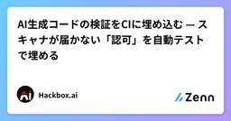
AI生成コードの検証をCIに埋め込む — スキャナが届かない「認可」を自動テストで埋める
Zennの「Test」のフィード
AI コーディングアシスタントが当たり前になって、コードを書く速度は確実に上がりました。GitHub が 2022 年に公開した研究では、Copilot を使った被験者は同じタスクを約 55% 速く完了しています。数字の大小より重要なのは、この速度差がそのまま「レビュー待ち行列」と「未検証のコード」に積み上がるという点です。ここで起きがちなのが、次のような錯覚です。「CI は回しているし、SAST も SCA も入れている」「四半期ごとにペネトレーションテストもやっている」「だから検証は足りている」実際には、この三つを足しても認可の穴はほぼ素通りします。本記事では、その理由...
3日前
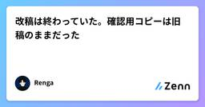
改稿は終わっていた。確認用コピーは旧稿のままだった
Zennの「Test」のフィード
技術記事を改稿し、ローカルの完了記録には更新後のhashも残っていました。しかし、確認用に渡していたクラウドのコピーは、以前の原稿のままでした。URLが同じでも、そこにある本文まで同じとは限りません。今回の不一致は、原本の改稿と、確認用コピーへの反映を別々に照合したことで見つかりました。 ファイル名とURLでは、どの版か分からない2026年10月20日の保存記録では、ローカルの改稿は5,387 bytes、確認用コピーは3,171 bytesでした。改稿では検証範囲を追記していましたが、確認用コピーにはその前の説明が残っていました。確認用コピーの全文を、保存していた旧稿と比較す...
3日前
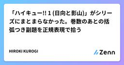
「ハイキュー!! 1 (日向と影山)」がシリーズにまとまらなかった。巻数のあとの括弧つき副題を正規表現で拾う
Zennの「Test」のフィード
蔵書管理アプリ「本棚（hondana）」では、本のタイトルから「シリーズ名」と「巻数」を推定して、漫画をシリーズごとにまとめています。推定のしかたは前の記事に書きました。そのあと実機でバーコードを読み、『ハイキュー!!』を登録すると、シリーズにまとまりませんでした。この記事は、その原因と直し方です。 書名が「巻数 (副題)」の形だったopenBD が返した書名は、こうでした。ハイキュー!! 1 (日向と影山)ハイキュー!! 2 (頂の景色)巻数のあとに、括弧つきの副題が付いています。前の記事の正規表現は、巻数が書名の末尾にあることを前提にしていました。final _vol...
3日前

保存データを守るQAケースブック｜操作・想定値・不具合報告の6実例
Zennの「Test」のフィード
保存・復元のあるアプリを作る個人開発者向けに、ダミーデータの準備、操作、期待値、不具合報告、AI・開発者への修正依頼、修正後の確認を6例でまとめた静的な教材です。BOOTHの同名6ケースPDF版と同じ6題材をWeb閲覧用に再構成しています。重複購入にご注意ください。PDF本体は含みません。はじめに・復元1ケース・記録ひな形は無料です。本体アプリや失敗条件の模擬機能、個別の診断・修正・添削は含みません。実DB・通信・端末間の競合や、すべての不具合の発見を保証するものではありません。AI支援で制作しています。
4日前
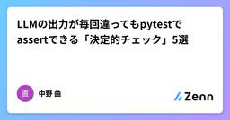
LLMの出力が毎回違ってもpytestでassertできる「決定的チェック」5選
Zennの「Test」のフィード
LLMアプリのテストを書こうとして、「出力が毎回違うから assert out == expected が書けない」と手が止まったことはないでしょうか。実は、出力の文面が揺れても必ず守られていなければならない性質はたくさんあります。そこだけをチェックすれば、揺れるLLMでも普通にpytestで落とせます。本記事ではこれを「決定的チェック」と呼び、すぐ使える5つを紹介します。題材は、商品レビューを読んで {"sentiment": ..., "summary": ..., "topics": [...]} を返す小さなアプリです。各チェックは「出力 out（dict）とケース case...
4日前
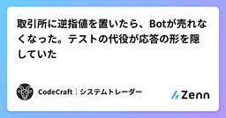
取引所に逆指値を置いたら、Botが売れなくなった。テストの代役が応答の形を隠していた
Zennの「Test」のフィード
暗号資産の自動売買Botを作っています。口座2万円ほどの少額で動かしながら、検証と本番の動きが一致しているかを毎週点検しています。今回は、安全のために足した仕組みが、Botの売りを止めていた話です。テストは全部通り、実機でも「注文が置けた」ことを確かめて、完了と書いていました。原因はたった1行の ["data"] でした。先に断っておくと、成績の話ではありません。実際の取引が1件絡みますが、1件で言えることは「その経路が動いた」までです。 1. 足したもの: 取引所に置く-15%の逆指値それまでのBotは、損切りを自分の中だけで持っていました。15秒ごとに価格を見て、条件に触...
4日前

復元エラーの後も元データは残るか：JavaScriptの8入力で確かめる
Zennの「Test」のフィード
復元の失敗を表示できても、元データを保持できているとは限りません。先に既存データを空にした後でJSONの解析に失敗すると、画面にはエラーが出ても元の2件は消えます。この記事では、人工データだけを扱うJavaScriptの最小モデルで確認します。コード全文を載せているので、商品や外部ライブラリを購入せず再現できます。 この例で決める復元形式version は 1notes は1件以上の配列各レコードは空でない文字列の id と、文字列の body を持つid の重複は拒否する空のバックアップを拒否するのは、この例の仕様です。実アプリで0件への復元を許すかは、別に...
4日前
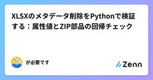
XLSXのメタデータ削除をPythonで検証する：属性値とZIP部品の回帰チェック
Zennの「Test」のフィード
メタデータ用XMLのハッシュが変わっても、「作成者名が消えた」とは限りません。別の日時だけが変わった可能性もあります。この記事では、小さな検証用XLSXを使い、処理後の属性値を読み取る確認と、属性以外のZIP部品が変わっていないかの確認を組み合わせます。XLSXを生成・加工する処理の回帰チェックを作りたい方が対象です。比較コードはクリーナー固有のAPIを使いません。AI MetaCleanプロジェクトで得た検証記録を、AIの執筆支援を用いてまとめました。コードは実際の入力・ダウンロード出力と、意図的に壊した出力で実行しています。画像は私たちの実際のツール画面です。氏名・会社名・案件コ...
4日前